Basic Usage
Input-rt component displays an input box where users can enter in text
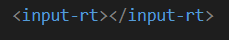 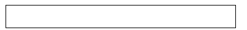Bootstrap
The Bootstrap attribute allows the input-rt component to be stylized with bootstrap's library. The Bootstrap attribute must also be implemented with the URL attribute containing the bootstrap link.
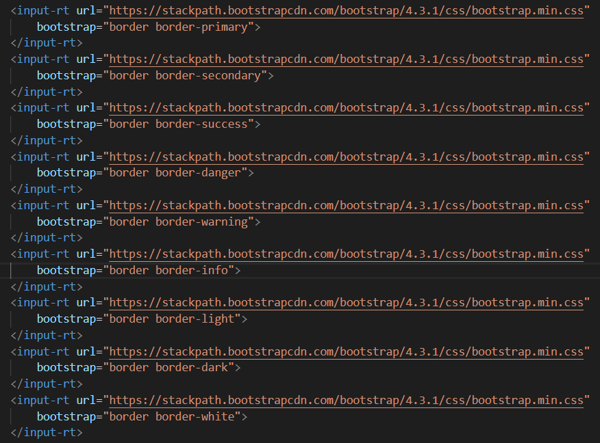 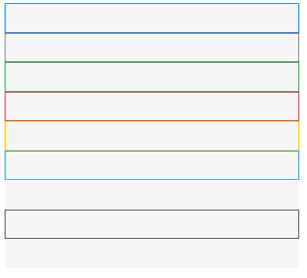
URL
The URL attribute allows the input-rt to be stylized by any CSS front-end framework. In this example, we are using bootstrap url along with the Bootstrap attribute.
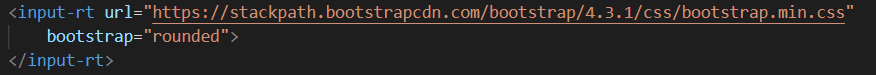 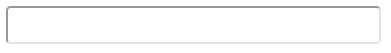
Password
The Password attribute displays text as black dots to encrypt the user input
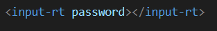 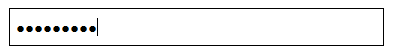Disabled
The Disabled attribute greys out the input-rt component and does not allow the user to input text. The cursor turns into a red stop sign icon when the user moves it over the input-rt component.
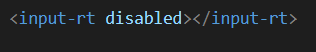 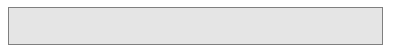Size
The size attribute allows the user to specify the size of the input-rt component. There is a large, medium, small, and default size.
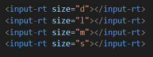
Width
The width attribute allows the user to specify the width (in pixels) of the input-rt component. The minimum width is 250px.
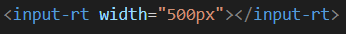 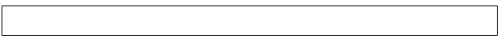Height
The height attribute allows the user to specify the height (in pixels) of the input-rt component.
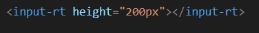
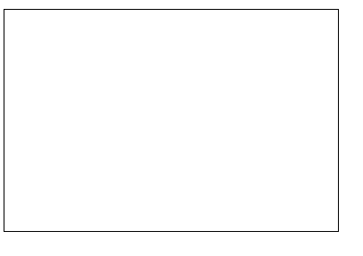Mode
Mode has 4 traits: sender, receiver, custom, and default
Sender Mode
Sender mode allows the input-rt component to input and send messages using an internal sender. In this example we are using MQTT where mqtt-send must be included with its id set to "sender", slot set to "messenger", and topic set to the same name as the receiving input-rt component.
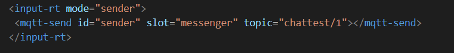Sender mode will display an input-rt component along with an input box on top for users to specify their username. The default username is "anonymous" where it will be displayed once a user enters an input into the input-rt component.
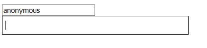Textarea Mode
Textarea mode makes the input-rt component read-only to display messages using an internal receiver. In this example, we are using MQTT where mqtt-fetch must be included with its id set to "receiver", slot set to "messenger", and topic set to the same name as the sending input-rt component.
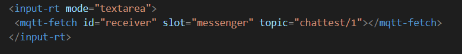Textarea mode will display an input-rt component along with an input box on top. The input box on top is a forced design required by MQTT, thus the input box does not have any functionality for this mode. The textarea mode will display receiving messages from the internal receiver along with the corresponding username. The input-rt component will have a resizable tab on the bottom right for users to resize their input-rt component.
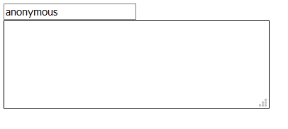Sender & Textarea
When we implement two input-rt components with a sender and textarea mode, they must include the same topic name to communicate with each other.
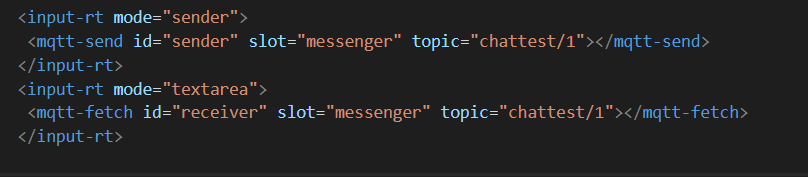The sender mode input-rt component will display the user's input onto the textarea mode input-rt component with the corresponding username.
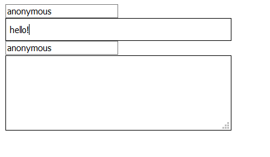 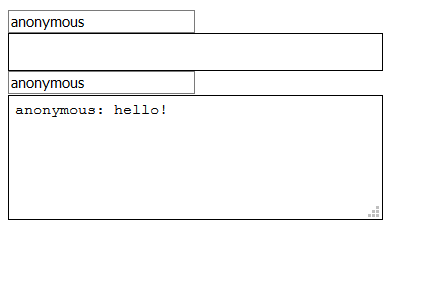